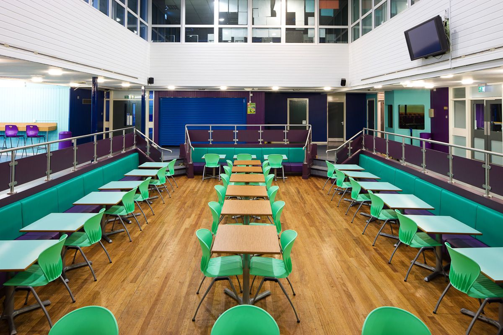

New Canteen
The new Canteen stands in front of the existing school building. The building is an independent free-form volume on the opposite side of the property from the school yard. Due to its volume, the new structure encloses the school yard, creating an intimate atmosphere. The shape of the building dialogues with the nearby Research Center so to place another contemporary component in an urban context characterized by buildings from the 1950s. The design language will make the multifunctionality of the building recognizable from the outside, having an inviting effect on visitors and users. Most importantly the compact structure adapts to the existing situation saving space. As a result the project makes optimal use of the courtyard, filling only spaces around the structures to be demolished. In addition the project will ensure the conservation of the pillar oaks and the small playground area. Near the oaks there is a seating area, which can also work as a small “auditorium” for events. The new sand playground is easily visible between the new access courtyard and the existing school building.
-
Implement online attendence system
1.Introduction Attendance Management System is software developed for daily student attendance in schools, colleges and institutes. It facilitates to access the attendance information of a particular student in a particular class. The information is sorted by the operators, which will be provided by the teacher for a particular class. This system will also help in evaluating attendance eligibility criteria of a student. Since ages, attendance system has remained one of the most important systems for evaluating the working time of students in any college or school. In short, this project is used to mark the number of days present/absent in any academic year of students in a college, school etc.
2.Propose System-This Application is built for automating the processing of attendance. It also enhances the speed of the performing attendance task easily. It also generates periodic reports to keep a check on the students who are regular & who are not.A Faculty has to login to the system and then in the attendance option they have to select appropriate class, semester and subject. So this will display the list of the students who are eligible to appear in this session. So now the faculty has to just select the students name from the manual attendance sheet according to their roll number and then submit the sheet. This will add the selected students as present student in that particular session. This system is very useful to the office staff also because they can generate various types of reports and submit them to respective faculties also or also can be submitted to the College Coordinator.